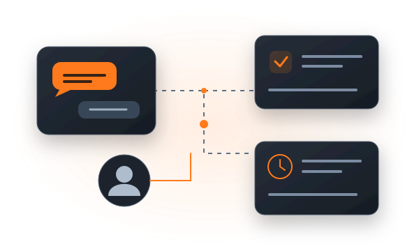
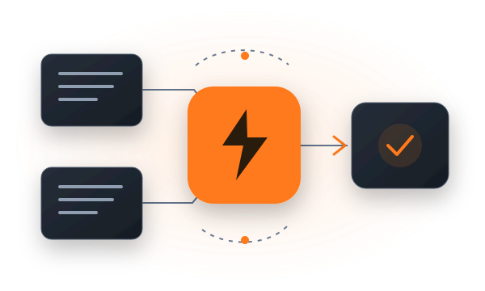

Primeiro, eu escuto.
Conversamos sobre o dia a dia da sua empresa. Mapeio as tarefas repetitivas, os gargalos e o que está tomando tempo da sua equipe.

Conversamos sobre o dia a dia da sua empresa. Mapeio as tarefas repetitivas, os gargalos e o que está tomando tempo da sua equipe.

Transformo essas tarefas em soluções digitais que executam o trabalho e conectam as ferramentas da sua operação.
Menos tempo no operacional. Mais espaço para criar relações, atender melhor e fazer o negócio crescer.
01 / PRESENÇA DIGITAL + ATENDIMENTO
Uma página que apresenta sua empresa, entende o que o visitante procura e organiza as informações para sua equipe continuar pelo WhatsApp.